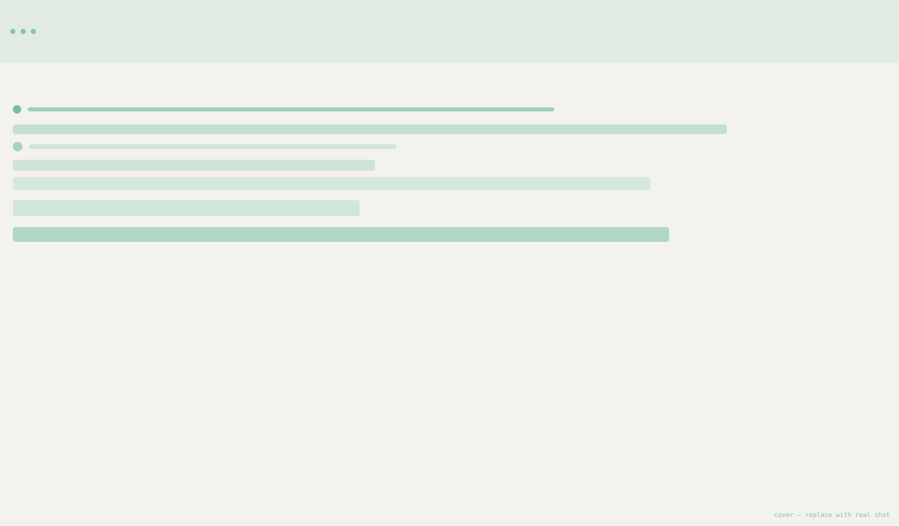
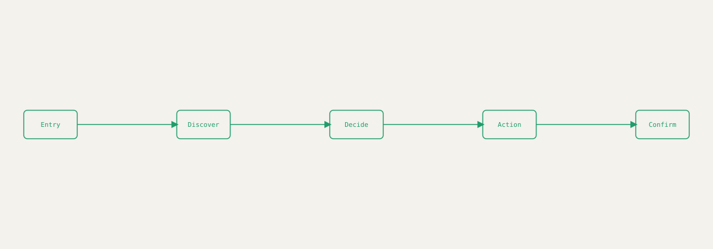
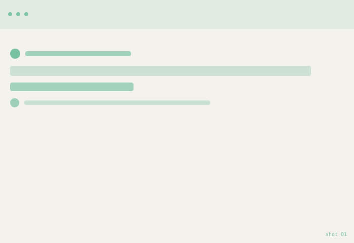
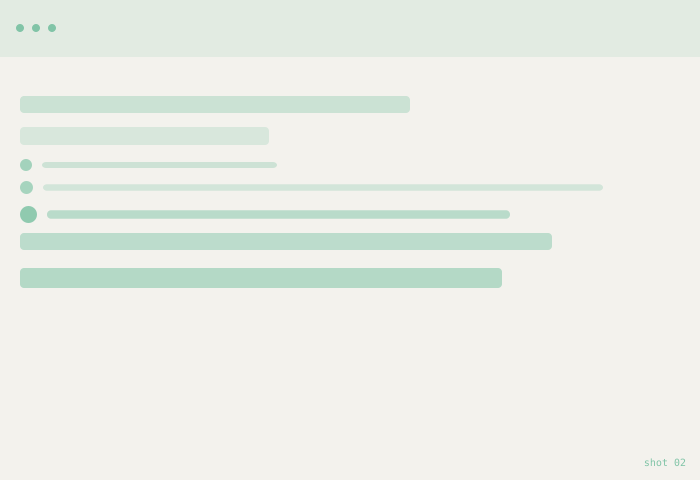
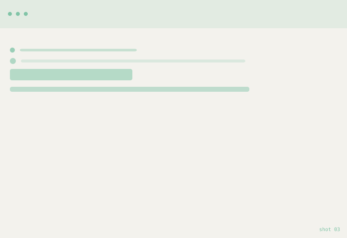
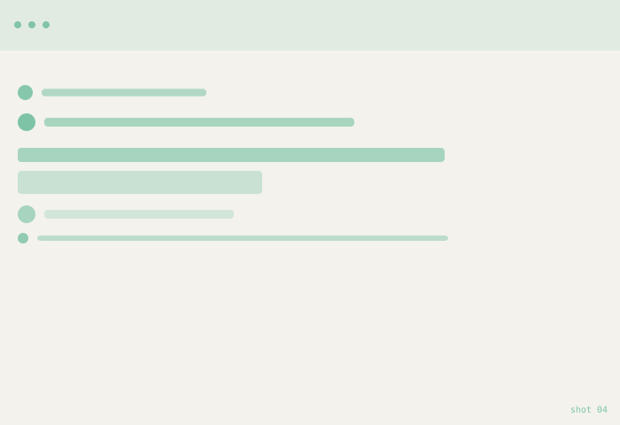

Fleet
A component design system built for a fast‑growing product team — replacing five inconsistent UI kits with one shared source of truth.

The problem
Every squad had its own buttons, spacing, and color values. Shipping anything new meant re‑deciding basic UI choices from scratch, and the product was starting to feel inconsistent screen to screen.
Replace this paragraph with your real problem statement — what was broken, for whom, and how you knew it (interviews, support tickets, analytics, etc.).
UX approach
I audited every screen in the product first, to find which patterns were true duplicates and which were genuinely different needs.
- Audited existing screens and inventoried every UI pattern in use
- Grouped near‑duplicates into a single set of core components
- Defined tokens for color, type, spacing, and elevation
- Built components in Figma with documented variants and states
- Piloted the system on one feature before a wider rollout
How a component gets adopted
Each component ships with clear states and usage rules, so a designer or engineer can go from "I need a button" to a correct implementation without guessing.

Replace this diagram with your real user‑flow export from Figma or FigJam.
Result & learnings
Describe the outcome here — what changed for the user, what you'd measure (completion rate, time‑to‑order, support tickets), and one or two things you'd do differently next time.
Shots
Replace these with real screenshots from Figma or your shipped product.



